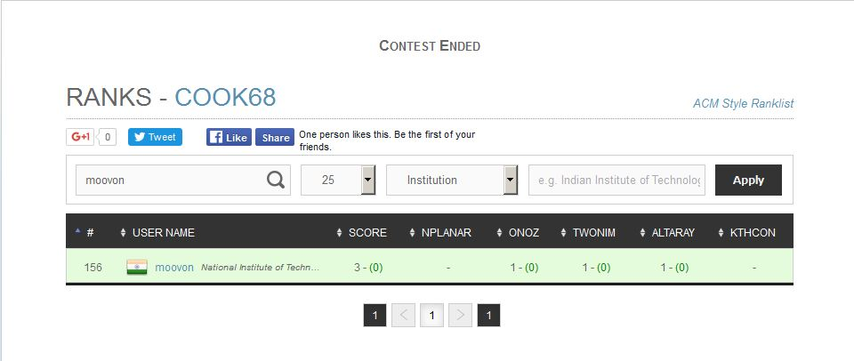

COOKOFF 68 (MARCH 2016)
Best cookoff performance till date with solving 3 out of 5 problems (the rest was solved by only 17 and 8 respectively).
Securing my best rank ever in cook off - 156. Its feels so good when you do perform nice. 
It also feels nice to get a better rank than a pro coder like Rajat De (:P I am just Kidding, he is one phenomenal Coder, He might just had a bad day or something).
Also solving the same number of problems that super-coder like Sumeet Verma and Akashdeep nain solved makes you feel good and confident (not to be carried away with over-confidence! Remember! :P :D )
Anyways, It was one of my best performance in competitive coding till date. I will remember it :D